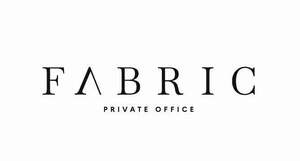

Trade Mark Journal No.2025/050 12 December 2025
UK00004302327 28 November 2025 (36)

- Class 36
- Investment services; Financial services; Financial investment management services; Financial and investment consultancy services; Financial services relating to wealth management; Financial management relating to investment; Investment management services; Financial advisory and management services; Real estate affairs; Financial affairs; Monetary affairs; Real estate management services relating to office premises; Insurance; Investment advice; Financial advice; Financial services relating to investment; Wealth management; Wealth management services; Arranging of mortgages; Advisory services relating to mortgages; Providing advice relating to the arranging of mortgages; Consumer credit services; Mortgage broking; Insurance broking; Credit brokerage; Debt advisory services; Financial advisory services; Financial advice relating to pensions; Pension investment management; Pension services; Pension planning; Planning (estate -) [financial]; Estate trust planning; Estate planning services [arranging financial affairs]; Financial planning services; Investment management; Investment brokerage; Funds investment; Securities investment services; Securities brokerage; Trading in securities; Securities brokerage and trading services; Mutual fund investment; Management of investment portfolio; Arranging of investments; Capital fund investment; Monitoring of investment funds; Provision of investment information; Private client investment services; Advice relating to investments; Computerised financial advisory services; Computerised financial analysis; Collection of financial information; Comparison of performance of securities; Computerised information services relating to investments; Financial analysis services relating to investments; Financial information, data, advice and consultancy services; Corporate finance.
TPIO Ltd